Basic NGS Data Analysis
🎯 Module Introduction:
In this module, you will be introduced to the fundamental principles of analyzing Next-Generation Sequencing (NGS) data. The course begins with an overview of various NGS technologies and the types of data they generate. Following this, you will learn how to identify Single Nucleotide Polymorphisms (SNPs) within resequencing datasets. The module also covers essential quality control measures, techniques for filtering erroneous data, and basic statistical analyses to interpret the biological significance of the identified SNPs.
.Section 1: Variant Calling
🏁 Learning Objectives:
- To develop proficiency in utilizing the Genome Analysis Toolkit (GATK) workflow for variant calling
- To understand the process of preparing raw data to meet the specifications of the GATK workflow
- Apply knowledge gained from GATK variant calling workflow to effectively identify and characterize genetic variants, including single nucleotide polymorphisms (SNPs) and small insertions/deletions (indels)
Variant Calling
- Definition
- Variant calling is the process of identifying genetic variations (such as SNPs and indels) in a sample by comparing it against a reference genome.
- Purpose
- To detect differences between sequenced data and the reference genome, which may indicate important genetic variations related to traits, diseases, or evolutionary processes.
- Applications
- Understanding genetic diversity
- Identifying genes associated with traits
- Improving rice breeding
Tools:
- Burrows-Wheeler Aligner (BWA)
A software package for mapping low-divergent sequences against a large reference genome - Genome Analysis Toolkit (GATK)
Offers a wide variety of tools with primary focus on variant discovery and genotyping - FastP
A tool designed to provide fast all-in-one preprocessing for FastQ files - FastQC
A quality control tool for high throughput sequence data - Picard
A set of command line tools for manipulating high-throughput sequencing data - SAMtools
Tool that provides various utilities for manipulating alignments in the SAM and BAM formats
Input Files:
- Raw reads
- Format:
FASTQ (.fq, .fastq, .fastq.gz) - FASTQ: Used to store both the nucleotide sequence data and quality scores
- 1st line: Sequence identifier
- 2nd line: Sequence
- 3rd line: Quality score identifier
- 4th line: Base quality scores
- Format:
- Reference
- Format:
FASTA (.fasta, .fa, .fsa) - FASTA: A text-based format for representing collections of nucleotide or protein sequences. The file consists of several blocks, each containing a header line and sequence lines. Typically, each block contains a sequence of a whole chromosome or a contig.
- Line 1: A header line starting with a
>character, which contains information about the sequence. - Line 2: Sequence (can occupy several lines)
- Format:
Intermediate Files:
-
Sequence Alignment/Map Format (SAM)
- a. Format for storing large nucleotide sequence alignments
- b. A
.samfile consists of two sections:- Header (lines starting with
@): Contains metadata about the reference genome and alignment process. - Alignment section: Contains one line per read, describing its alignment to the reference.
Example
.samcontent:@HD VN:1.6 SO:coordinate @SQ SN:chr1 LN:248956422 @PG ID:bwa PN:bwa VN:0.7.17-r1188 read123 0 chr1 1000 60 100M * 0 0 ACGTACGT... TGCAACGT... read456 16 chr1 1050 60 100M * 0 0 TGCAGTCA... ACGTTGCA...Explanation of fields in alignment lines (tab-delimited):
- QNAME: Query name (e.g., read ID)
- FLAG: Bitwise flag describing the read (e.g., strand, pairing)
- RNAME: Reference sequence name (e.g., chr1)
- POS: 1-based position where alignment starts
- MAPQ: Mapping quality (0–60, higher is better)
- CIGAR: CIGAR string describing alignment (e.g., 100M = 100 matched bases)
- RNEXT: Next read's reference name (for paired-end)
- PNEXT: Position of the next read (paired-end)
- TLEN: Template length
- SEQ: Read sequence
- QUAL: Quality scores (ASCII-encoded)
- Header (lines starting with
-
Binary Alignment Map (BAM)
- Binary version of the SAM format
- To view the file, use:
- Specification document (section 4)
samtools view [BAMfile] -
BAM Index files
samtools index– indexes SAM/BAM/CRAM files- Syntax:
samtools index [options] [BAMfile]
Output File:
- Variant Call Format (VCF)
- A file format used to store genetic variants, including their genomic position, reference and alternate alleles, quality scores, and sample-specific genotype data . It only lists positions where a variant is present.
- Specification document 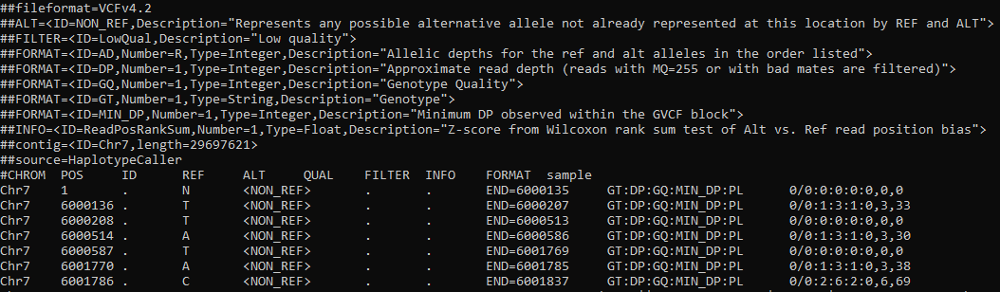
- Genomic Variant Call Format (gVCF)
- A kind of VCF that includes both variant and non-variant regions. It provides information about regions where no variation was found, which helps in later combining data from multiple samples. 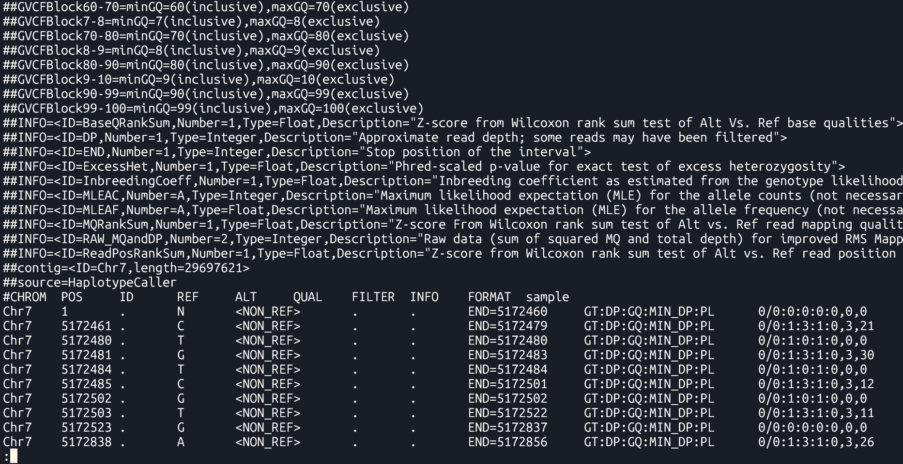
Section 2: Variant Calling Pipeline
Description
This is a pipeline for variant calling based on best practices for GATK4
Requirements and Preparation
- Ubuntu installation on your laptop/workstation
- Installation of the necessary tools
- BWA, FastP, FastQC, GATK4, Picard, Samtools
- Demo dataset
- Reference:
Ref.fasta - Data:
sample-1_1.fq.gz sample-1_2.fq.gz
Pipeline
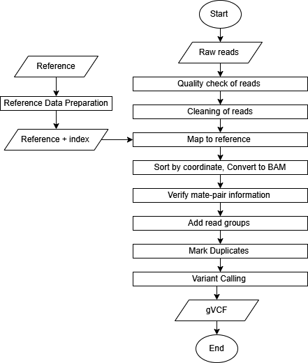
Reference Data Preparation (Indexing)
Tools: bwa index, samtools faidx, picard CreateSequenceDictionary
Purpose
Indexing improves the ability of tools to rapidly access random locations of the file. It allows efficient retrieval of sequence data from the FASTA file.
Commands
The following commands are essential for preparing the reference genome and supporting tools for alignment and variant calling:
BWA Index
| bwa index [Reference.fasta] |
bwa index: This command generates an index for the reference genome. The index allows the aligner (like bwa) to quickly locate matching sequences during alignment, making the process more efficient.
Output Files: Several index files are generated in the same directory as the FASTA:
Ref.fasta.bwtRef.fasta.pacRef.fasta.annRef.fasta.ambRef.fasta.sa
File descriptions:
.bwt– Burrows-Wheeler Transform of the reference.pac– Packed version of the reference sequence.ann– Annotation file with contig names and lengths.amb– Information about ambiguous bases (Ns).sa– Suffix array used for fast search
These files allow bwa to perform fast sequence lookups during read alignment.
Samtools faidx
| samtools faidx [Reference.fasta] |
samtools faidx: This command creates an index file (.fai) for the reference FASTA file. This index is required by tools like GATK to quickly access specific sequences from the reference genome during operations like variant calling.
Output: Ref.fasta.fai
The .fai file is a tab-delimited index
This index is required by GATK and other tools to reference genome positions directly and efficiently.
Example .fai content:
chr1 248956422 52 60 61
chr2 242193529 253404903 60 61
chr3 198295559 500657153 60 61
Columns:
- Sequence name (e.g., chr1)
- Sequence length in bases
- Byte offset of the first base in the FASTA file
- Line length of sequence lines in the FASTA
- Line width including newline characters
Picard CreateSequenceDictionary
| java -jar $PICARD CreateSequenceDictionary -REFERENCE [Reference.fasta] -OUTPUT [Reference.dict] |
picard CreateSequenceDictionary: This command generates a sequence dictionary file (.dict) from the reference FASTA file. This file is required by tools like GATK for proper handling of BAM files and ensures that genomic sequences can be accessed correctly during analysis.
Output: Ref.dict
The .dict file is a text file containing metadata for each sequence (contig) in the FASTA, such as its name, length, and MD5 checksum, allowing tools to validate and synchronize reference data across workflows.
Example .dict content:
@HD VN:1.6 SO:coordinate
@SQ SN:chr1 LN:248956422 M5:6aef897c3d6ff0c78aff06ac189178dd
@SQ SN:chr2 LN:242193529 M5:f98db672eb0993dcfdabafe2a8824adb
@SQ SN:chr3 LN:198295559 M5:3e8bb77c8e8e9d1217c335d58efb8c09
Raw Read Preparation
-
Quality Check
Tool: FastQC Analysis Modules
To ensure that subsequent analyses are based on reliable data.
in1: First input sequence filein2: Second input sequence file...inN: Additional input files for batch QC-
FastQC Report - identify potential issues such as adapter contamination, overrepresented sequences, and base quality distribution.
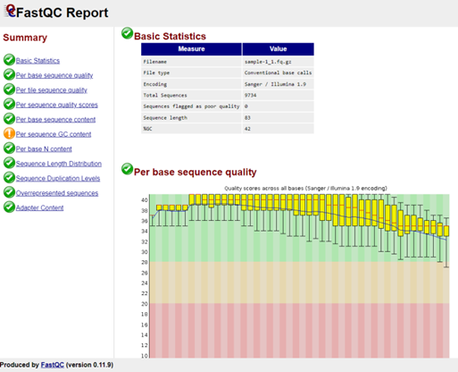 -
Cleaning
Tool:FastP
Functionality
A fast all-in-one preprocessing tool for removing adapters, filtering, and trimming raw sequencing data
Syntax
fastp -i [in1.fq] -I [in2.fq] -o [out1.fq] -O [out2.fq] Arguments:-i: Input file for Read 1-I: Input file for Read 2-o: Output cleaned Read 1-O: Output cleaned Read 2
Command
fastp -i Data/sample-1_1.fq.gz -I Data/sample-1_2.fq.gz -o Data/sample-1_1-cleaned.fq.gz -O Data/sample-1_2-cleaned.fq.gz Output
-
Cleaned reads ready for alignment(*-cleaned.fq.gz)
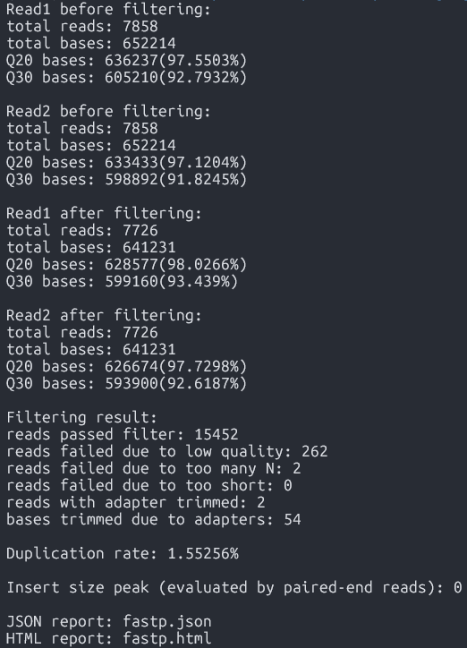
Purpose
Syntax
| fastqc [in1.fq] [in2.fq] [...inN.fq] |
Command
| fastqc Data/sample-1_1.fq.gz Data/sample-1_2.fq.gz |
Output
Alignment to Reference Genome
Tool:bwa mem
Maps sequencing reads to a reference genome to identify variation locations, enabling accurate variant calling.
-
bwa mem arguments [Reference.fasta] [in1.fq] [in2.fq] > [aln.sam] Arguments:-t INT: number of threads (e.g.,-t 8)
Command
bwa mem -t 8 Ref/Ref.fasta Data/sample-1_1-cleaned.fq.gz Data/sample-1_2-cleaned.fq.gz > Output/sample.sam - Sequence alignment data / alignment output (SAM format)
Purpose
Syntax
Output
Sorting
Tool:SortSam
- To organize reads by their genomic position for efficient variant calling.
- To reduce file size and enable faster processing of files.
--INPUT, -I: Input BAM or SAM file to sort. Required--OUTPUT, -O: Sorted BAM or SAM output file. Required--SORT_ORDER, -SO: Sort order of the output file.coordinate: Sorts primarily according to the SEQ and POS fields of the record.- Sorted aligned reads (.sorted.bam)
Purpose
Syntax
| java -jar $GATK SortSam --INPUT [aln.sam] --OUTPUT [sorted.bam] -SORT_ORDER [coordinate] |
Command
| java -jar $GATK SortSam --INPUT Output/sample.sam --OUTPUT Output/sample.sorted.bam -SORT_ORDER coordinate |
Output
Fix mate information
Tool:FixMateInformation
- To ensure that the paired-end sequencing reads have consistent and correct mate information.
--INPUT, -I: The input files to check and fix. Required--OUTPUT, -O: The output file to write to. Required--CREATE_INDEX: Whether to create an index when writing VCF or coordinate sorted BAM output.--VALIDATION_STRINGENCY: Validation stringency for all SAM files read by this program.LENIENT: Emit warnings but keep going if possible.
Mate-fixed aligned reads (.fxmt.bam) and an index (.fxmt.bai).
Purpose
Syntax
| java -jar $GATK FixMateInformation --INPUT [sorted.bam] --OUTPUT [fxmt.bam] --CREATE_INDEX [TRUE] --VALIDATION_STRINGENCY [LENIENT] |
Command
| java -jar $GATK FixMateInformation --INPUT Output/sample.sorted.bam --OUTPUT Output/sample.fxmt.bam --CREATE_INDEX TRUE --VALIDATION_STRINGENCY LENIENT |
Output
Add Read Group Information
- To distinguish sequencing data sources and ensure accurate variant calling and analysis.
- To read more about "read groups", please see this link.
--INPUT, -I: Input file (BAM or SAM or a GA4GH url). Required--OUTPUT, -O: Output file (BAM or SAM). Required--RGLB, -LB: Read-Group library. Required--RGPL, -PL: Read-Group platform (e.g., ILLUMINA). Required--RGPU, -PU: Read-Group platform unit (e.g., run barcode). Required--RGSM, -SM: Read-Group sample name. Required--RGCN, -CN: Read-Group sequencing center name. Default:null--RGID, -ID: Read-Group ID. Default:1Aligned reads with updated read group information (.addrep.bam) and an index (.addrep.bai).
Purpose
Syntax
| java -jar $GATK AddOrReplaceReadGroups --INPUT [fxmt.bam] --OUTPUT [addrep.bam] --RGID [ID] --RGPU [Unit] --RGLB [Library] -PL [Platform] -SM [SampleName] -CN [CenterName] --VALIDATION_STRINGENCY [LENIENT] --CREATE_INDEX [TRUE] |
Command
| java -jar $GATK AddOrReplaceReadGroups --INPUT Output/sample.fxmt.bam --OUTPUT Output/sample.addrep.bam --RGID run100 --RGPU unit1 --RGLB lib1 -PL Illumina -SM sample -CN CN --VALIDATION_STRINGENCY LENIENT --CREATE_INDEX TRUE |
Output
Mark Duplicates
Tool:MarkDuplicates
- To avoid bias and inaccuracies.
--INPUT, -I: Input SAM or BAM files to analyze. Must be coordinate sorted. Required--OUTPUT, -O: Output file with marked duplicates. Required--METRICS_FILE, -M: File to write duplication metrics to. Required- Duplicate-marked alignment file (.mkdup.bam)
Index (.mkdup.bai)
Duplication metrics file (.mkdup.metrics)
Purpose
Syntax
| java -jar $GATK MarkDuplicates --INPUT [addrep.bam] --OUTPUT [mkdup.bam] --CREATE_INDEX [TRUE] --VALIDATION_STRINGENCY [LENIENT] --METRICS_FILE [mkdup.metrics] |
Command
| java -jar $GATK MarkDuplicates --INPUT Output/sample.addrep.bam --OUTPUT Output/sample.mkdup.bam --VALIDATION_STRINGENCY LENIENT --CREATE_INDEX TRUE --METRICS_FILE Output/sample.mkdup.metrics |
Output
Merging BAM files (Optional)
Tool:samtools merge
Purpose
- Merging (if there are multiple read pairs per sample)
Syntax
| samtools merge [out.bam] [in1.bam] [in2.bam] |
Do not forget to index the merged BAM file. Use samtools index [out.bam]
Output
- Merged BAM file
Variant Calling
Tool:HaplotypeCaller
- Call SNPs and indels from aligned sequencing reads.
--input, -I: BAM/SAM/CRAM file containing reads. Required--output, -O: File to which variants should be written. Required--reference, -R: Reference sequence file. Required--emit-ref-confidence, -ERC: Mode for emitting reference confidence scores.
Default:NONE| Options:NONE,BP_RESOLUTION,GVCF- A set of raw variant calls, including SNPs and indels (.g.vcf)
GVCF index (.g.vcf.idx)
BAM file bamout.bam
BAM file index bamout.bai
Functionality
Syntax
| java -jar $GATK HaplotypeCaller -R [Reference.fasta] -I [mkdup.bam] -O [file.g.vcf] -ERC [GVCF] --bam-output [file.bamout.bam] |
Command
|
java -jar $GATK HaplotypeCaller \ -R Ref/Ref.fasta \ -I Output/sample.mkdup.bam \ -O Output/sample.g.vcf \ -ERC GVCF \ --bam-output Output/sample.bamout.bam |
Output
Merging GATK GVCFs
Tool:CombineGVCFS
- SNP calling produces multiple gVCF files – each file has variant for one sample.
- To analyze the data, it is necessary to merge the individual gVCF files.
--variant, -V: One or more VCF files containing variants. Required--output, -O: File to which variants should be written. Required--reference, -R: Reference sequence file. Required- The combined GVCF
Purpose
Syntax
| java -jar $GATK CombineGVCFS -R [Reference.fasta] -V [in1.g.vcf] -V [in2.g.vcf] -O [merged.g.vcf] |
Output
Genotyping
Tool:GenotypeGVCFs
Purpose
- Produces genotype calls, filters out non-variant positions
Syntax
| java -jar $GATK GenotypeGVCFs -R [Reference.fasta] -V [input.g.vcf] -O [output.vcf] |
--variant, -V: A VCF file containing variants. Required--output, -O: File to which variants should be written. Required--reference, -R: Reference sequence file. Required
Output
- The combined, genotyped VCF
VCF Exploration
Motivation
- Variant callers output both true and false variants
- Base calling errors, alignment errors, contamination...
- Balance between sensitivity and precision
- The needs of applications may require different preference between precision or sensitivity
- Multi-sample analysis allows to increase the proportion of true positives without sacrificing sensitivity.
- Population genetics principles applicable to your set of samples can further increase the accuracy
VCF File: Structure
- GATK provides various annotations to help users filter the variants
- We will first recall the details of VCF format and then go over the annotations
Here is an example VCF, colored using bioSyntax tool.
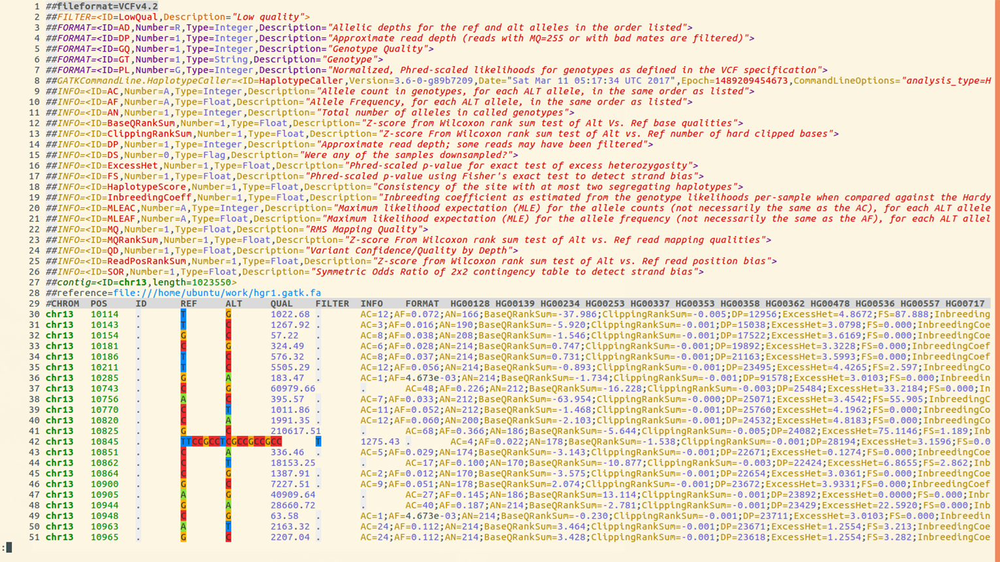
Lines 1-29 make up the
Header Section, Lines 30 and below comprise the Data section
- Line 1 shows VCF version
- Line 2 has a single definition of filters (values in the FILTER column). In this example there is only one filter value
PASS - Line 3 to 7 Definition of Genotype information fields
- Line 8the command used to create file
- Line 9 to 26 define
INFOannotations. TheINFOcolumn is usually where all quality related annotations are located. There are quite a few annotations here, we will only use 2 or 3 of these in this presentation - Line 27 lists reference genome contigs names and lengths. In this example there is only one contig. In real rice datasets you will have 12 lines, one for each chromosome
VCF File: Section
VCF file consists of two parts: header and data section.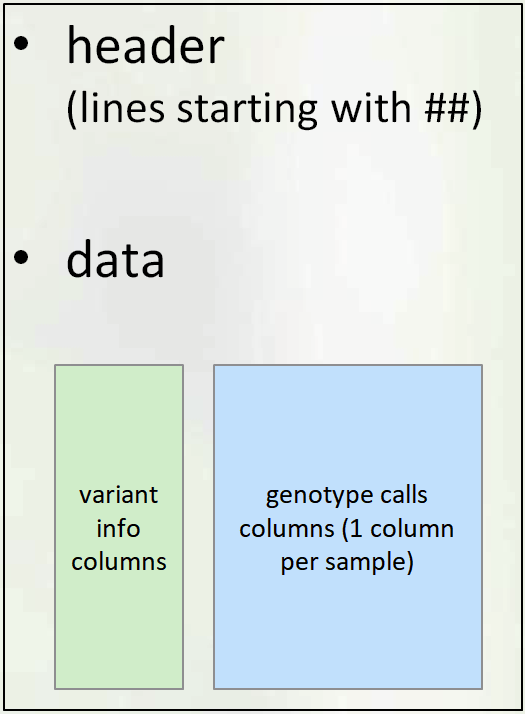
-
Header Section
The Header contains:
- VCF Version
- Commands used to create file
- Definitions of annotations
- Names and lengths of contigs/chromosomes
- Last line: column names for data matrix
-
Data Section
Each data row contains genotype call data defined by the formatting string located in
FORMATcolumn- Example below:
GT:AD:DP:GQ:PLmeans that each data point consists of 5 values separated by colon(:), namely:: GT: genotype,AD: allele depth… etc.
GT - Genotype (Numerical encoding)
0- reference allele,1- first alt allele,2-second alt allele, etc0/1- unphased ,0|1- phased heterozygote1/1homozygous variant (based on 1st alternate allele)- The format can be different for each variant (different rows may have different strings in the FORMAT column), but consistent across samples (i.e. within the row)
- Example - look at the first non-missing genotype call 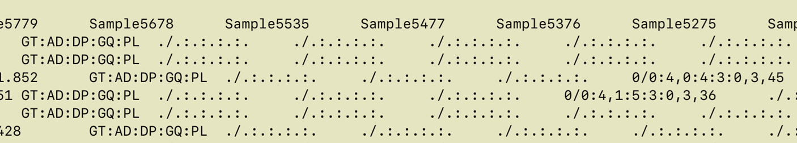
-
GT=0/0(homozygous ref)
AD=4,0(4 reads support REF, 0 reads support ALT
DP=4
GQ=3
PL = 0,3,45(phred-scaled odds , lower is better)
- Example below:
QC Annotations
- Genotype Call Level (for each sample at each variant)
GQ: genotype qualityPL: genotype likelihoodAD: allele depth (number of reads supporting each allele)- See link
for a more detailed explanation of differences between
QUALandGQ - Variant Level
QUALFILTERINFO:DP,QD,AN,AC,AF
QUAL
QUAL is usually defined as: Phred-scaled probability of having no variant at this position
higher QUAL = lower prob of no variant = higher prob of real variant
| QUAL | P(no variant) | -logP |
|---|---|---|
| 10 | 0.1 | 1 |
| 20 | 0.01 | 2 |
| 30 | 0.001 | 3 |
| 40 | 0.0001 | 4 |
Phred scaled means take log10 and multiply by -10:
\(QUAL = (−log P(no variant)) * 10\)
Question: How bad/good is
QUAL=30?
- - In 100,000 variants with QUAL=30, expect 0.001*100,000 = 100 false positives
Read Depth (DP)
- DP within INFO column
(INFO/DP): Read depth of coverage for this position across all samples
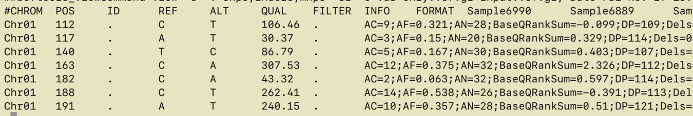
- DP within each genotype call - read depth for that genotype only example:
FORMAT Sample1 Sample2 Sample3 GT:AD:DP 0/0:12,0 :12 0/1:6,4:10 1/1:0,33:33
Note : DP shows depth AFTER filtering by UG or HC algorithm. It is not the same as BAM read depth.
Quality-by-Depth (QD)
- Quality-by-depth or QUAL-by-depth
- Motivation:
- higher DP leads to higher QUAL
- thus, to assess quality regardless of depth, need to normalise it. Relevant for high coverage data
- QD uses only the reads supporting the ALT allele (so, it’s not simply QUAL/DP)
- For exact definition see GATK documentation
- QD distribution is usually bimodal (smaller QD peak from heterozygous calls, larger QD peak from homozygous alt calls)
- GATK filtering recommendation:
QD > 2
MQ and MQ0
- MQ: Mapping quality
- Defined in VCF header as:
##INFO=(ID=MQ,Number=1,Type=Float,Description="RMS Mapping Quality") - Each read has a mapping quality - confidence that alignment is good
- MQ is an average of mapping quality across all reads supporting the variant
(actual average measure: Root Mean Square) - MQ0: number of reads with mapping quality 0
- Many reads with MQ=0 signify a region that is hard to align - perhaps should not trust
Recommended minimum MQ = S40
Allele Frequency Annotations
AN, AC, AF
AN- Total number of chromosomes with called allele
- Number of non-missing genotypes times ploidy
AC- Number of chromosomes carrying ALT allele in case of several ALT alleles (multiallelic SNP)
- The counts will be separated by comma
“,” AF- Allele Frequency
- Proportion of chromosomes carrying ALT allele =
AC/AN
- These quantities can also be extracted from simpler formats like
HapMapandPLINK - VCF also has some related quantities with prefix MLE (maximum likelihood estimate):
MLEAC,MLEAF. We will not use these.
Filtering on Allele Frequency
- Filtering on allele frequency is perhaps most popular type of filtering. You may see recommendations like
filter all alleles with frequency < 1% or 5% - While this is helpful in most cases, there are some considerations to keep in mind
Base Calling Errors
- Sequencing (base calling) errors are very rare events, and thus are mostly found as singleton SNPs (i.e. appear only in a single sample).
- However, base calling errors will typically appear in only one read covering a position, and GATK tries to detect these.. The variant quality (QUAL and GQ) will typically reflect this and filtering based on GATK annotations should deal with most of these.
- On the other hand, based on population genetics we expect an abundance of singleton SNPs in every diverse sample.( Highest number across all frequency bins).
- With data produced by modern NGS* instruments, most singleton SNPs are actually true SNPs.
- Depending on analysis needed, one may wish to retain even rarest SNPs, after filtering based on GATK annotations only (no allele frequency filtering).
Alignment Errors
- Plant genomes are complicated:
- Ubiquitous repeats
- Traces of ancient WGD (whole genome duplication)
- Divergence in terms of structural variants. Sample genome may have large deletions, insertions, translocations, or inversions, compared to the reference genome
- As a result, read mapping is imperfect. Reads originating from one place in the genome may be mapped to another
- This is most common source of false variants. These come from a real biological signal (correctly sequenced read), but are not positioned correctly
- sometimes can hinder genotyping a true variant (one can have both true and false genotype at the same position)
- The same alignment error can be affecting multiple samples, and the resulting false SNPs may have high allele frequency.
Heterozygosity
- For an inbred species, the expected amount of heterozygotes at a given SNP position is less than for randomly mating population, and is given by a (modified) Hardy-Weinberg formula
Fcan be estimated from genome-wide data. GATK in multi-sample genotyping mode also provides estimates ofF (InbreedingCoef).
\(Expected.prop.of.het. = 2p(1-p)(1-F)\)
where:
F is the inbreeding coefficient
p is the allele frequency
Allele frequency vs heterozygosity in 3K data
Figure 1
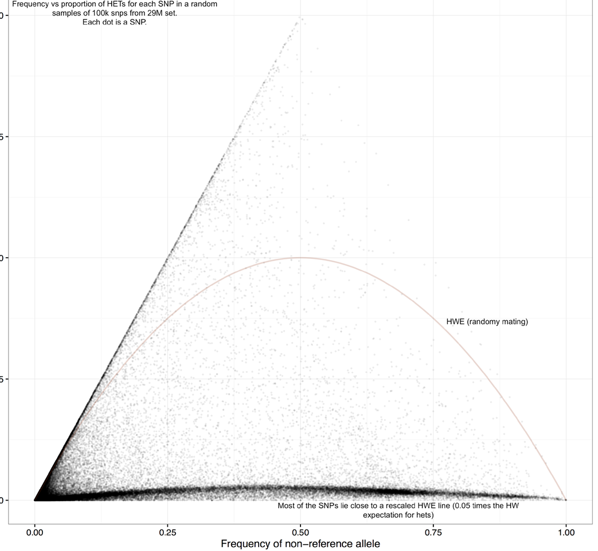- Observe that the distribution is quite far from random mating expectation (red curve)
Y axis: proportion of heterozygous calls
X axis: allele frequency
Figure 2
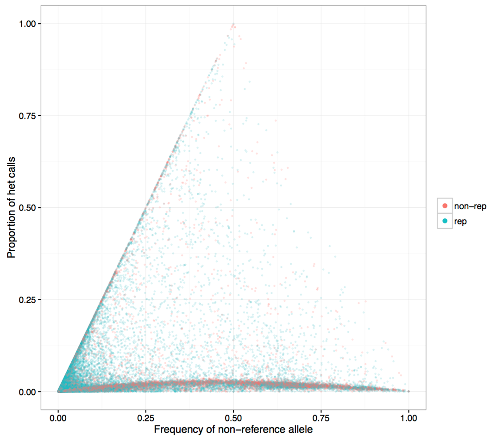- Same figure with repeat region SNPs colored blue
- Higher heterozygosity SNPs tend to concentrate in repeat regions
Figure 3
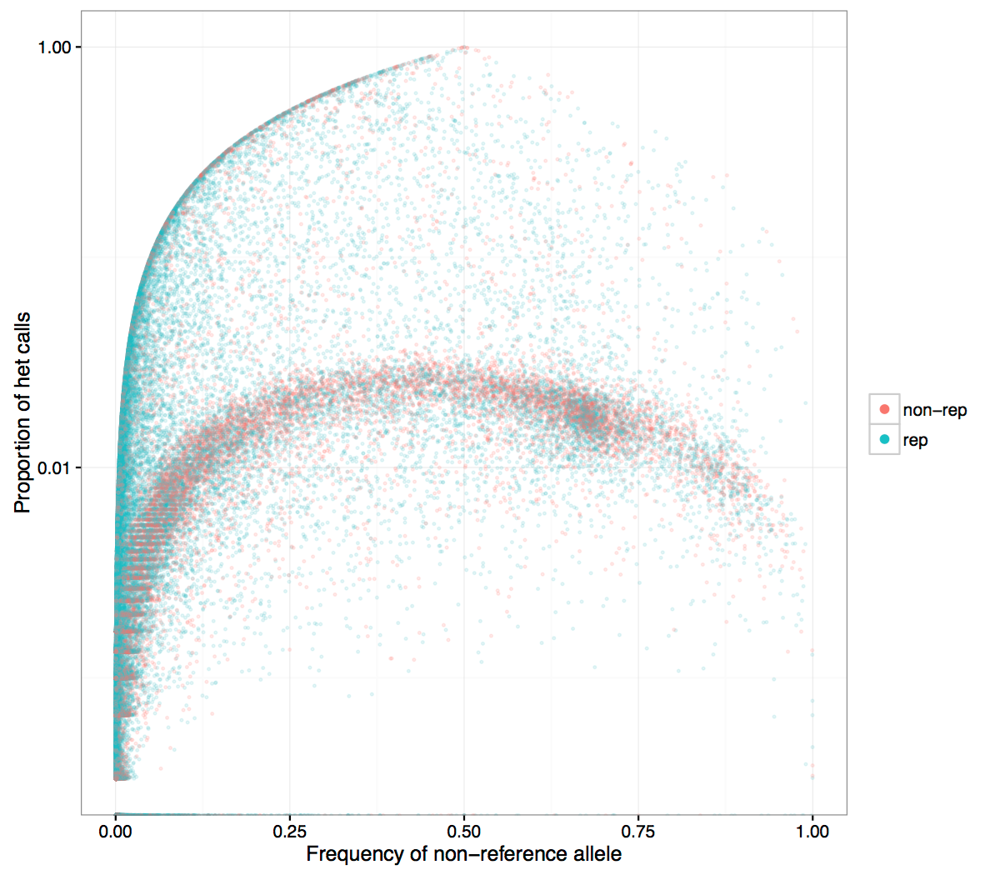- Same plot with log axis for Y. It is seen more clearly that SNPs in non-repetitive regions are at the small heterozygosity proportion
SNP heterozygosity along genome
Figure 1
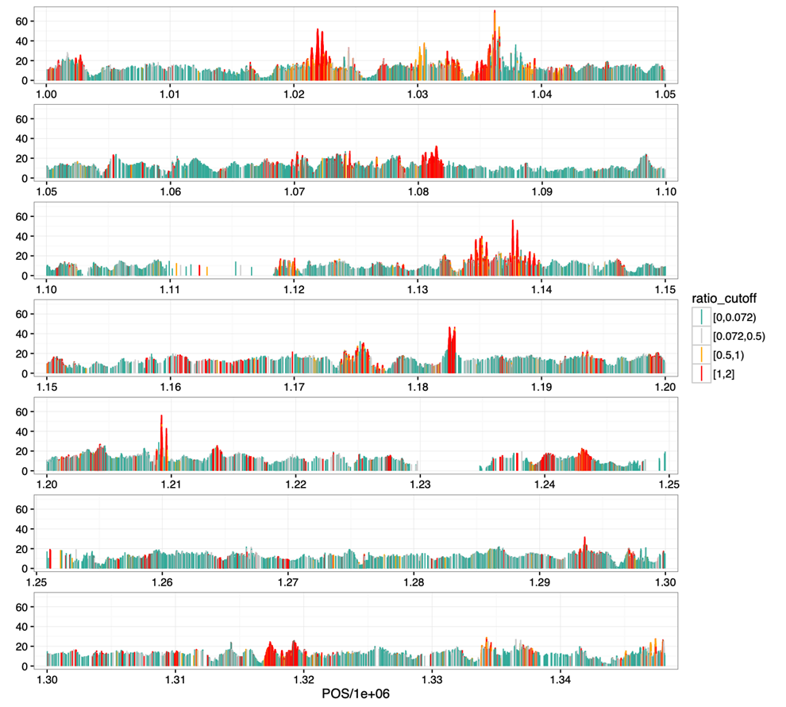- Shown is the beginning of
Chr9 - Highly heterozygous SNPs are clustered (red curve), consistent with their potential origin in duplications
- They are quite ubiquitous, can explain a large proportion of raw SNPs that are filtered
Filtering: based on heterozygosity
- Initial filtering using QD annotation deals with many alignment errors
- If
InbreedingCoefis available, it may be used, otherwise we can estimate it
Filtering: based on Hardy-Weinberg
Question:"Some tools (e.g. PLINK) have a built-in filtering based on testing Hardy-Weinberg expectation. Can we use that filtering when we analyse rice data"?- Short Answer: No
- The built-in HWE test does not account for inbreeding, thus it is inappropriate for rice.
Why the standard Hardy-Weinberg can be inappropriate
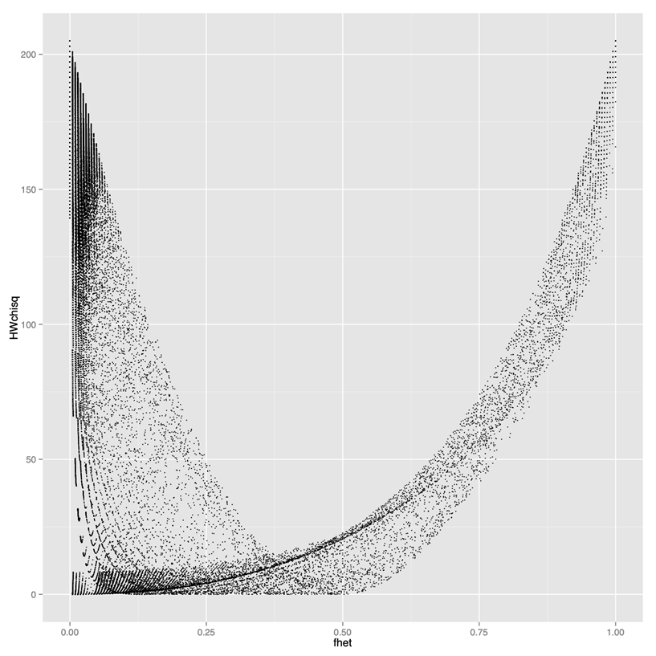Y axis: test statistics (high values result in filtering out)X axis: proportion of het calls- If you use standard HW filtering, you lose a lot of good SNPs. Need to use modified HW filtering
Modified Hardy-Weinberg
- Expected proportion of heterozygous calls under standard HW:
- When there is inbreeding, the expected proportion of hets is given by the following formula
\(Hexp = 2p(1-p)\)
\(Hexp = 2p(1-p)(1-F)\)
F = inbreeding coefficient
F > 0.95 for rice
Take-away
- Variant callers output both true and false variants due to various errors (base calling errors, alignment errors, contamination) and filtering helps to overcome those errors.
- Different analyses may require different filtering procedures. Allele frequency filtering is good for some analyses (GWAS), but could potentially lead to bias in other analysis (divergence)
- Using population genetics principles can help design filtering that fits your data
- For inbred species, filtering based on heterozygosity/inbreeding coefficient is appropriate (and built-in tools based on HW filtering for human data are not appropriate)
Variant Calling Pipeline
Description
This is a pipeline for variant calling based on best practices for GATK4
Requirements and Preparation
- Ubuntu installation on your laptop/workstation
- Installation of the necessary tools
- BWA, FastP, FastQC, GATK4, Picard, Samtools
- Demo dataset
- Reference:
Ref.fasta - Data:
sample-1_1.fq.gz sample-1_2.fq.gz
Pipeline
Data Preparation and Import
- Unpack the sample dataset archive.
-
tar -xzvf sample.tar.gz Extracts the
sample.tar.gzarchive- 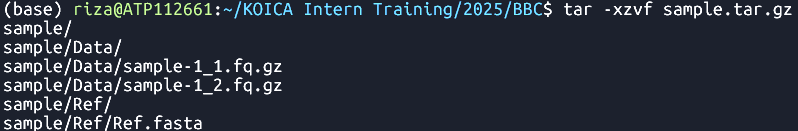
- sample ├── Data │ ├── sample-1_1.fq.gz │ └── sample-1_2.fq.gz └── Ref └── Ref.fasta 3 directories, 3 files
- Create
Outputdirectory. -
cd sample -
mkdir Output Changes the current directory to
sampleand creates a new directory namedOutput
inside it.- 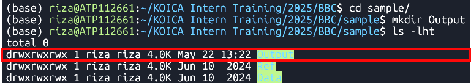
Command
Output
Command
Output
Reference Data Preparation (Indexing)
BWA Index
Syntax
-
bwa index Ref/Ref.fasta Indexes the
Ref.fastafile using the BWA tool- Files:
- 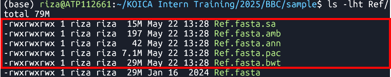
Samtools faidx
Syntax
-
samtools faidx Ref/Ref.fasta Indexes the
Ref.fastafile using samtools- File:
Ref.fasta.fai - 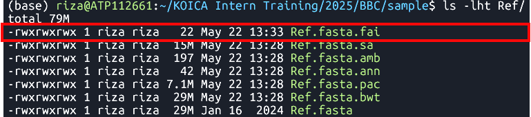
Picard CreateSequenceDictionary
Syntax
-
java -jar $PICARD CreateSequenceDictionary -REFERENCE Ref/Ref.fasta -OUTPUT Ref/Ref.dict Creates a sequence dictionary for
Ref.fasta- File:
Ref.dict 
| bwa index [Reference.fasta] |
Command
Output
Ref.fasta.bwtRef.fasta.pacRef.fasta.annRef.fasta.ambRef.fasta.sa
| samtools faidx [Reference.fasta] |
Command
Output
| java -jar $PICARD CreateSequenceDictionary -REFERENCE [Reference.fasta] -OUTPUT [Reference.dict] |
Command
Output
Raw Read Preparation
Quality Check
Syntax
-
fastqc Data/sample-1_1.fq.gz Data/sample-1_2.fq.gz Runs FastQC analysis on files
sample-1_1.fq.gzandsample-1_2.fq.gz- File:
FastQC reports - 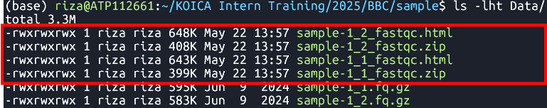
Cleaning
Syntax
-
fastp -i Data/sample-1_1.fq.gz -I Data/sample-1_2.fq.gz -o Data/sample-1_1-cleaned.fq.gz -O Data/sample-1_2-cleaned.fq.gz Clean reads
sample-1_1.fq.gzandsample-1_2.fq.gz- File:
*-cleaned.fq.gz - 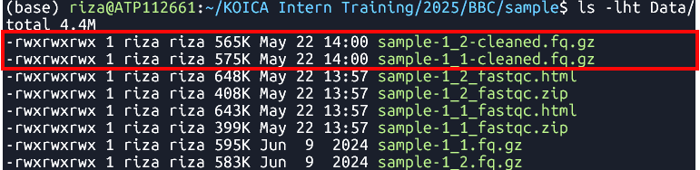
| fastqc [in1.fq] [in2.fq] [...inN.fq] |
Command
Output
| fastp -i [in1.fq] -I [in2.fq] -o [out1.fq] -O [out2.fq] |
Command
Output
Alignment to Reference Genome
Syntax| bwa mem arguments [Reference.fasta] [in1.fq] [in2.fq] > [aln.sam] |
Command
-
bwa mem -t 8 Ref/Ref.fasta Data/sample-1_1-cleaned.fq.gz Data/sample-1_2-cleaned.fq.gz > Output/sample.sam Align cleaned reads
sample-1_1-cleaned.fq.gzandsample-1_2-cleaned.fq.gz
to a reference genomeRef.fasta
Output
- File:
sample.sam - 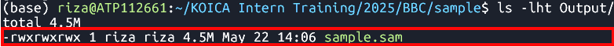
Sorting
Tool:SortSam
Syntax| java -jar $GATK SortSam --INPUT [aln.sam] --OUTPUT [sorted.bam] -SORT_ORDER [coordinate] |
Command
-
java -jar $GATK SortSam --INPUT Output/sample.sam --OUTPUT Output/sample.sorted.bam -SORT_ORDER coordinate Sorts
sample.samfile by coordinate.
Output
- File:
sample.sorted.bam - 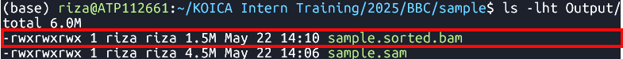
Fix mate information
Tool:FixMateInformation
Syntax| java -jar $GATK FixMateInformation --INPUT [sorted.bam] --OUTPUT [fxmt.bam] --CREATE_INDEX [TRUE] --VALIDATION_STRINGENCY [LENIENT] |
Command
-
java -jar $GATK FixMateInformation --INPUT Output/sample.sorted.bam --OUTPUT Output/sample.fxmt.bam --CREATE_INDEX TRUE --VALIDATION_STRINGENCY LENIENT Fixes mate information in a sorted BAM file
sample.sorted.bam.
Output
- Files:
- 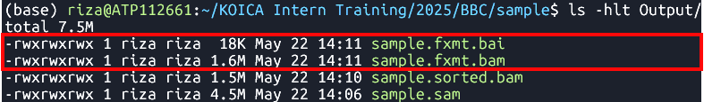
sample.fxmt.bamsample.fxmt.baiAdd Read Group Information
Syntax| java -jar $GATK AddOrReplaceReadGroups --INPUT [fxmt.bam] --OUTPUT [addrep.bam] --RGID [ID] --RGPU [Unit] --RGLB [Library] -PL [Platform] -SM [SampleName] -CN [CenterName] --VALIDATION_STRINGENCY [LENIENT] --CREATE_INDEX [TRUE] |
Command
-
java -jar $GATK AddOrReplaceReadGroups --INPUT Output/sample.fxmt.bam --OUTPUT Output/sample.addrep.bam --RGID run100 --RGPU unit1 --RGLB lib1 -PL Illumina -SM sample -CN CN --VALIDATION_STRINGENCY LENIENT --CREATE_INDEX TRUE Adds read group information in
sample.fxmt.bamfile.
Output
- Files:
- 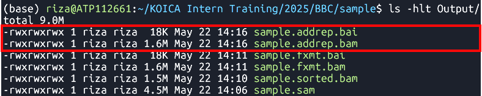
sample.addrep.bamsample.addrep.baiMark Duplicates
Tool:MarkDuplicates
Syntax| java -jar $GATK MarkDuplicates --INPUT [addrep.bam] --OUTPUT [mkdup.bam] --CREATE_INDEX [TRUE] --VALIDATION_STRINGENCY [LENIENT] --METRICS_FILE [mkdup.metrics] |
Command
-
java -jar $GATK MarkDuplicates --INPUT Output/sample.addrep.bam --OUTPUT Output/sample.mkdup.bam --VALIDATION_STRINGENCY LENIENT --CREATE_INDEX TRUE --METRICS_FILE Output/sample.mkdup.metrics Identifies and marks duplicate reads in
sample.addrep.bamfile.
Output
- Files:
- 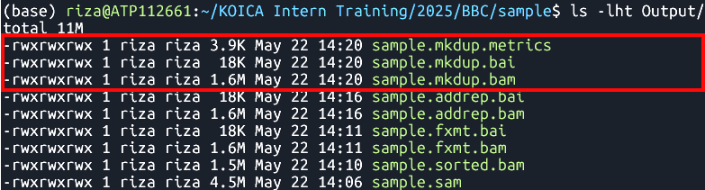
sample.mkdup.bamsample.mkdup.baisample.mkdup.metricsMerging BAM Files (Optional)
Tool:samtools merge
Syntax| samtools merge [out.bam] [in1.bam] [in2.bam] |
Command
-
samtools merge SB4-1A_SHB134-11-44.mkdup.bam \ ./V300088030.4/Output/V300088030.4.mkdup.bam \ ./V300081906.4/Output/V300081906.4.mkdup.bam \ ./V300082057.1/Output/V300082057.1.mkdup.bam
Variant Calling
Tool:HaplotypeCaller
Syntax| java -jar $GATK HaplotypeCaller -R [Reference.fasta] -I [mkdup.bam] -O [file.g.vcf] -ERC [GVCF] --bam-output [file.bamout.bam] |
Command
-
java -jar $GATK HaplotypeCaller \
-R Ref/Ref.fasta \
-I Output/sample.mkdup.bam \
-O Output/sample.g.vcf \
-ERC GVCF \
--bam-output Output/sample.bamout.bam
Performs variant calling on a BAM file
sample.mkdup.bamagainst a reference genome
Ref.fasta
Output
- Files:
- 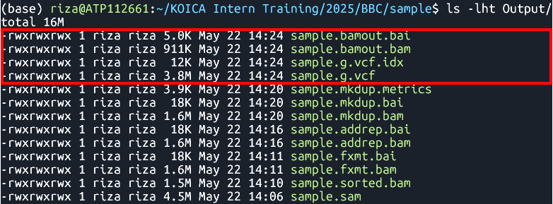
sample.g.vcfsample.g.vcf.idxsample.bamout.bamsample.bamout.baiMerging GATK GVCFs
Tool:CombineGVCFS
DatasetSyntax
| java -jar $GATK CombineGVCFS -R [Reference.fasta] -V [in1.g.vcf] -V [in2.g.vcf] -O [merged.g.vcf] |
Command
-
java -jar $GATK CombineGVCFs \
-R Ref/chr01.fa \
-V gvcfs/sample1.g.vcf \
-V gvcfs/sample2.g.vcf \
-V gvcfs/sample3.g.vcf \
-O Output/combined.g.vcf
Output
- File:
Combined GVCFs - 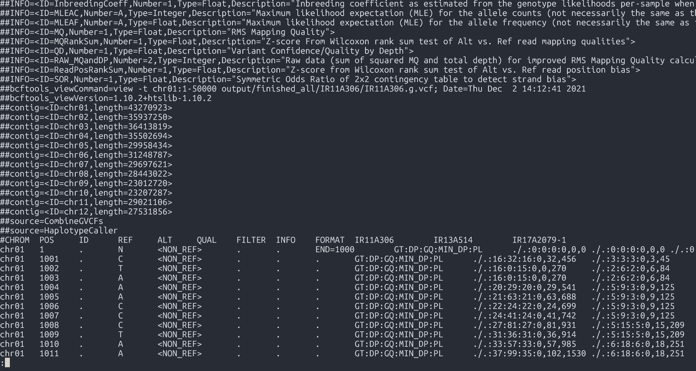
Genotyping GVCFs
Tool:GenotypeGVCFs
Syntax| java -jar $GATK GenotypeGVCFs -R [Reference.fasta] -V [input.g.vcf] -O [output.vcf] |
Command
-
java -jar $GATK GenotypeGVCFs -R Ref/chr01.fa -V Output/combined.g.vcf -O Output/combined.vcf
Output
- File:
Merged VCF - 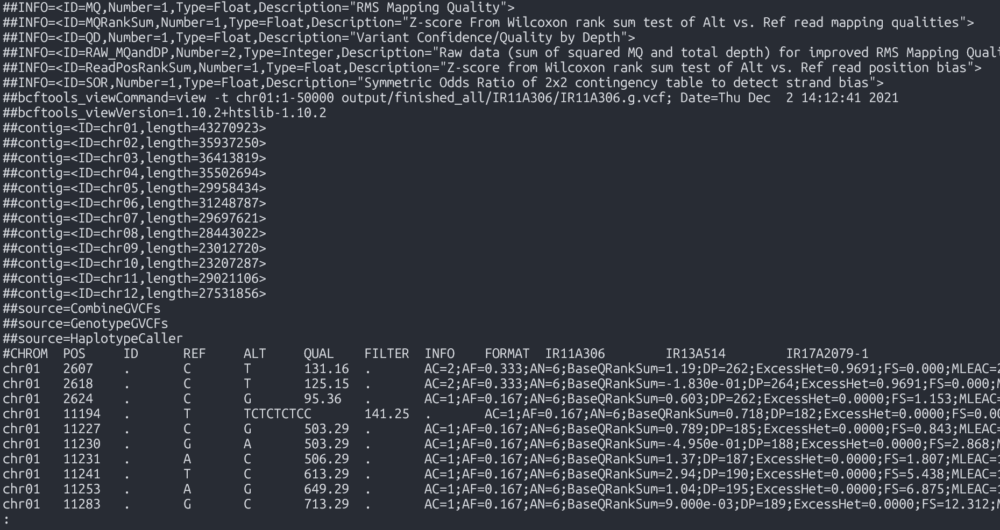
Input and Output Files
Input Files
| File Type | File Name |
|---|---|
| VCF | geno-250kb.vcf.gz |
| gVCF | sample1-50kb.g.vcf |
| BAM | kanin-4.sorted.bam |
Output Files
| Output Type | Description |
|---|---|
| Statistics | General summary metrics and counts |
| Tables | Structured result tables for further analysis |
| Plots | Visual representations such as charts and graphs |
Getting to know the tool
Installing BCFtools - please follow the Software Installation Guide
- To get help directly within the terminal, you can run the command without arguments:
bcftools #bcftools -hbcftools view- Most used commands:
bcftools #: with no arguments: general info and list of commandsbcftools query: transform VCF/BCF into user-defined formatsbcftools view: VCF/BCF conversion, view, subset and filter VCF/BCF filesbcftools annotate: annotate and edit VCF/BCF files. E.g. add variant IDsbcftools csq: call variation consequences (like snpEff)bcftools isec: convert VCF/BCF files to different formats and backbcftools reheader: modify VCF/BCF header, change sample namesbcftools sort: sort VCF/BCF filebcftools index: needed for random access into VCF file
Usage: bcftools [--version|--version-only] [--help] [command] [argument]
* Adding information to VCF
* Manipulating VCF files
Initial getting to know the data
So, you got a fresh VCF file from the variant calling pipeline. It may be a gVCF file or a simple VCF file.
Question: What is the difference?
- The input data folder has both a
gVCFand aVCFfile. Let's see what is inside these files.
VCF Header
A lot of information about how the VCF was produced and what kind of information may be found in it, is located in the header. To see the header you may run:
bcftools view --header-only geno-250kb.vcf.gz
|
Based on the information in the header, please do the following exercise.
Hands-on exercise
For both input VCF files, extract the headers and answer the questions:
- Find which commands produced the original VCF file (GATKCommandLine).
- Find which commands were applied to the original VCF file to create the current file.
- Find names of chromosomes or contigs that are present in this (g)VCF.
- Does this VCF contain InbreedingCoefficient metrics?
- Does this VCF contain QD metrics? What is its type (number, string, etc)?
Overall Stats
To get an overall report containing many basic statistics, run bcftools stats
bcftools stats geno-250kb.vcf.gz > stats.txt
|
Exercise
Based on the stats file, find out how many of the following are in the file:
- SNPs
- indels
- multiallelic SNPS
- multi-nucleotide polymorphisms (MNPs)
- reference-only variants (not SNPs)
- Ts/Tv ratio
- Number of SNPs with allele frequency between 0 and 0.01
BCFtools query command
The main element in the structure of the command is the query string (or format string) that specifies what information you want to get. For each record in the VCF the query string will be evaluated and added as a row in the output
| bcftools query -f '%CHROM\t%POS\t%REF\t%ALT[\t%SAMPLE=%GT]\n' file.vcf.gz |
Extract variant QC metrics
To get various QC metrics, include the names of the metrics with the % sign prefix into the query string.
There are some metrics, like read depth DP, that are applicable to both variant as a whole or to each sample.
To distinguish between these, use prefixes INFO and FORMAT
INFO/DP: depth across all samples, is placed into the INFO columnFORMAT/DP: depth at each individual sample genotype call, is mentioned in the FORMAT column, the actual information is located in the genotype matrix
Example: some variant level QC metrics
bcftools query -f '%CHROM\t%POS\t%REF\t%ALT\t%QUAL\t%QD\t%INFO/DP\n' file.vcf.gz > variant-DP.txt
For comparison, here is an example of read depths of each sample:
bcftools query -f '%CHROM\t%POS\t%REF\t%ALT[\t%SAMPLE=%FORMAT/DP]\n' file.vcf.gz
Extract variant genotype matrix as a table
Let us create a file by first putting row names, then dumping all the genotype calls:
bcftools query -f 'CHROM\tPOS\tREF\tALT[\t%SAMPLE]\n' geno-250kb.vcf.gz | head -n 1 > out.txt
|
bcftools query -f '%CHROM\t%POS\t%REF\t%ALT[\t%GT]\n' geno-250kb.vcf.gz >> out.txt
|
S
Note in the first command we don't use % except in the %SAMPLE - thus, only sample names will be interpolated into the string.
Exploring alignment (BAM) files
We will use SAMtools software to retrieve basic information about the alignment data from BAM files.
In order to make sense of some of the following, it would help to be familiar with SAM file structure, which you can read about in SAM format specifications.
See also the SAM format wiki page for easier reading.
The following SAMtools commands will be used:
samtools index
samtools view
samtools tview
samtools stats
samtools flags
View header and alignments
To view header:
- In older versions of samtools
- In the newest versions
samtools view -h kanin-4.sorted.bam | less
|
samtools head kanin-4.sorted.bam
|
To view alignments in a more familiar environment of MS Excel, you may use samtools view and save the result as a TSV file, which you can then view in Excel by importing as a tab separated file
echo "QUERYNAME,FLAG,REFNAME,POS,MAPQ,CIGAR,RNEXT,POSNEXT,TLEN,SEQ,QUAL" | tr "," "\t" > aln.tsv
|
samtools view kanin-4.sorted.bam | head -n 20 >> aln.tsv
|
Note: changing tabs to commas in the whole file using the tr command might not be a very good idea, since the base quality string may contain commas.
Understanding Alignment Metadata
A lot of information about alignment of a read pair to reference is contained in the flags column.
Each flags is a boolean true or false value encoded in a bit of the flags byte.
See Bitwise flags
To easily retrieve the flags pertaining to a certain read alignment, e.g. the first read in the input BAM file is
FCD0R2NACXX:7:2105:6385:19577#CCACATTC_24 163 Chr7 272768 0 83M = 273143 458 AGTTGTTTCCTCCCGCCGTGGCCCACGCTTTATCCGCACTGCGCGGAAGCGTGTTGTTGGTTCTTCCACCGTGTTCCGTTTCC BFHHHHJJIJIJJJIJJJGHJJJIIIIIJJJIIIIJIJJJJGHEDD@BDDDB@BDDDDDDDDDDDDCCDDDDDDDDDDDDDCD NM:i:1 MD:Z:5C77 MC:Z:83M AS:i:78 XS:i:78Its flag column shows value
163
-
Run the following:
samtools flags 163 - The result:
0xa3 163 PAIRED,PROPER_PAIR,MREVERSE,READ2
To understand meanings of these abbreviations, start with running samtools flags without arguments
samtools flags
|
About: Convert between textual and numeric flag representation Usage: samtools flags FLAGS... Each FLAGS argument is either an INT (in decimal/hexadecimal/octal) representing a combination of the following numeric flag values, or a comma-separated string NAME,...,NAME representing a combination of the following flag names: 0x1 1 PAIRED paired-end / multiple-segment sequencing technology 0x2 2 PROPER_PAIR each segment properly aligned according to aligner 0x4 4 UNMAP segment unmapped 0x8 8 MUNMAP next segment in the template unmapped 0x10 16 REVERSE SEQ is reverse complemented 0x20 32 MREVERSE SEQ of next segment in template is rev.complemented 0x40 64 READ1 the first segment in the template 0x80 128 READ2 the last segment in the template 0x100 256 SECONDARY secondary alignment 0x200 512 QCFAIL not passing quality controls or other filters 0x400 1024 DUP PCR or optical duplicate 0x800 2048 SUPPLEMENTARY supplementary alignment
The next read is
FCD0R2NACXX:7:2105:6385:19577#CCACATTC_24 83 Chr7 273143 0 83M = 272768 -458 TCGGCGTAGCTCTGTGACTTGTCCACACCCATTGTATCAGGTGTTTTTATGATTTGAAAAATCCAGTTTATGCCTAGTGTGTG BDDDBDEEEEEFFFDFFFHHHHJIHHHJJIJGIJJJJJJJJJJJJJJJJJJJJJJJJJJJIIJJJJJJIJJJJJJJJHHHHHF NM:i:1 MD:Z:30G52with the flag
83
-
Run the following:
samtools flags 83 - The result:
0x53 83 PAIRED,PROPER_PAIR,REVERSE,READ1
Interactive text Viewer
First, make sure the file is indexed
samtools index kanin-4.sorted.bam
|
Then (No need to pipe to less command!)
samtools tview kanin-4.sorted.bam -p Chr7:6011011
|
For a more feature-full experience, use a GUI alignment viewer such as IGV.
Module Summary
Understanding the genetic basis of diversity through the discovery of Single Nucleotide Polymorphisms (SNPs) via variant calling is a fundamental step in gene discovery. By identifying and analyzing SNPs, researchers can uncover genetic variations that contribute to differences in traits. This knowledge is critical for pinpointing specific genes associated with those traits, facilitating advancements in fields such as genetics, breeding, and biotechnology. In this module, you have gained an understanding of the Variant Calling workflow. You have explored the essential tools and software used for variant discovery, including FASTQC, BWA, Picard, SamTools, and GATK. You have also had the opportunity to perform variant calling, and you have learned how to analyze and interpret the resulting data files, such as VCF and BAM files.
- Single Nucleotide Polymorphisms (SNPs) and Insertions/Deletions (InDels) are crucial for analyzing rice diversity, establishing population structure, and identifying genes associated with important traits.
- The variant calling workflow is essential for identifying variants in a diverse rice population. It is important to become proficient with software tools such as BWA, SamTools, GATK, and BCFTools for effective variant calling.
- Exploring BAM and VCF output files is crucial for understanding and interpreting variant data.
References
Slatko BE, Gardner AF, Ausubel FM. Overview of Next-Generation Sequencing Technologies. Curr Protoc Mol Biol. 2018 Apr;122(1):e59. doi: 10.1002/cpmb.59. PMID: 29851291; PMCID: PMC6020069. https://doi.org/10.1002/cpmb.59